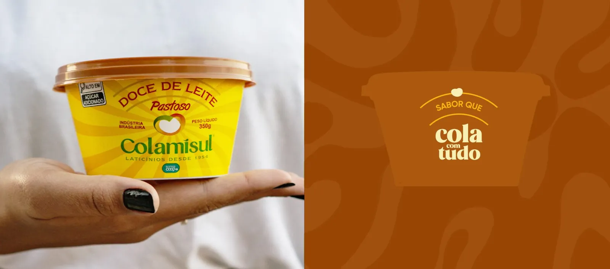
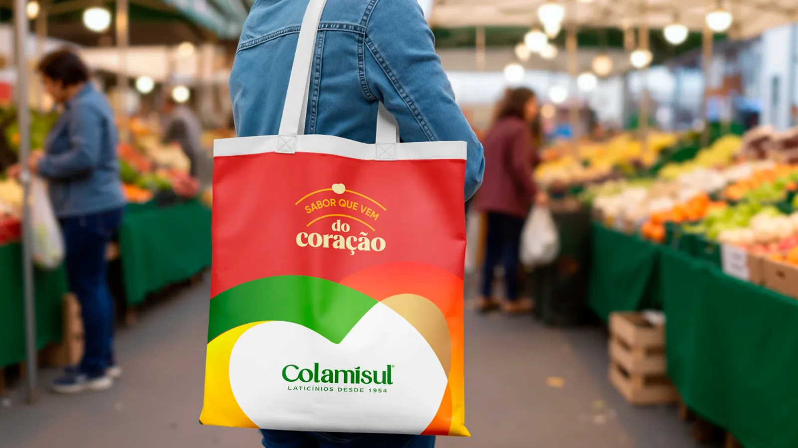
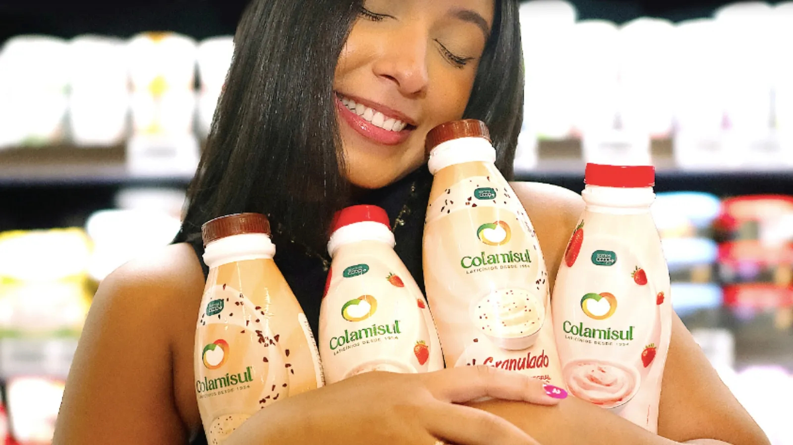
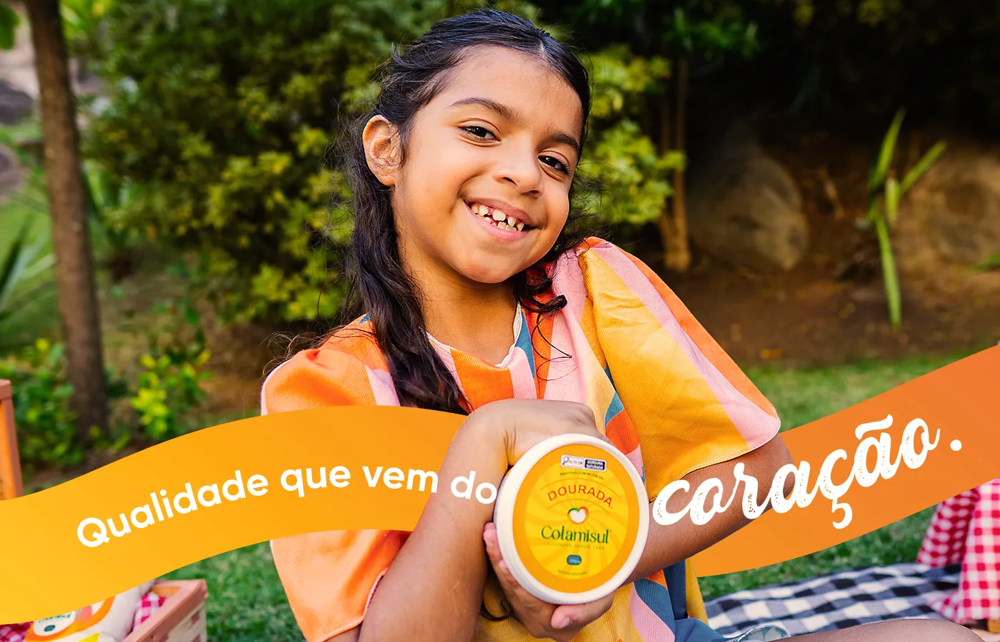

A Colamisul é uma marca construída a partir do compromisso diário. Antes de qualquer símbolo ou identidade visual, ela nasce do propósito que move pessoas a começarem todos os dias com responsabilidade, pertencimento e orgulho.
Desde 1954, cada cooperado entrega mais do que leite. Entrega constância, cuidado contínuo e uma herança construída ao longo do tempo. Esse valor está no gesto repetido, na relação direta com a terra e nos processos conduzidos com atenção e respeito. A confiança que chega à mesa das famílias não é criada por discurso, mas por prática.
O desafio apresentado à Plimper partiu exatamente desse ponto: como tornar visível aquilo que sempre esteve presente? Como estruturar uma identidade capaz de traduzir cooperação, proximidade e credibilidade em uma linguagem contemporânea, sem descaracterizar a essência da cooperativa?
Mais do que criar uma nova marca, o projeto propõe transformar sentimento em sistema, afeto em estratégia e história em presença clara e consistente.
Símbolo que nasce da terra
O ponto de partida do projeto foi o território. O Pico dos Pontões, um dos maiores símbolos de Mimoso do Sul, carrega forte valor cultural, afetivo e identitário para a comunidade local. Ele representa permanência, referência e orgulho coletivo. Era impossível construir a narrativa visual da Colamisul sem considerar esse elemento.
Ao aprofundar o estudo simbólico, o contorno do Pico revelou uma leitura estratégica: além da montanha, ele forma a letra “M” de Mimoso do Sul. Território e identidade se encontram em um único gesto visual, reforçando o posicionamento da marca como uma cooperativa que assume suas raízes e diz, de forma clara: “somos daqui”.
Como reforça Romis Carmo, diretor criativo da Plimper: “A identidade de uma marca não se desenvolve sem entender sua comunidade, seus colaboradores e seus clientes.”

Design que conecta pessoas, produtos e propósito
A força da Colamisul sempre esteve na relação entre cooperados, famílias, consumidores e território. Esse vínculo não é conceitual, é vivido. O desafio do design foi dar forma visual a essa rede de relações.
A solução surgiu a partir de um símbolo simples e carregado de significado: um coração formado por fitas. As fitas representam o fluxo contínuo da cooperativa, o caminho que liga quem produz a quem consome, quem cuida da terra a quem confia no produto final.
De forma sutil, essas fitas também constroem as iniciais “C” de cooperativa e “M” de Mimoso. É um detalhe que não exige explicação para funcionar, mas que aprofunda o sentido da marca para quem observa com atenção.
Como dizia Bruno Munari, “para entender o design, basta observar a natureza”. Aqui, o design nasce do movimento natural da cooperação e o traduz em linguagem visual.
Uma marca preparada para o amanhã
O rebranding da Colamisul foi estruturado como uma plataforma completa de marca, envolvendo:
- Reposicionamento estratégico
- Nova identidade visual e verbal
- Redesenho das embalagens
- Estratégia de comunicação
- Posicionamento digital
- Construção de plataforma de marca
O objetivo foi garantir coerência em todos os pontos de contato. Assim como na lógica cooperativista, nenhuma parte funciona sozinha. Visual, discurso, embalagem e presença digital precisam atuar em conjunto para sustentar percepção, confiança e reconhecimento.

Da montanha para o rótulo: embalagens que contam histórias
A atualização das embalagens teve como foco elevar a percepção de qualidade sem romper o vínculo cultural da marca. Foram adotadas cores que diferenciam as linhas de produto, mantendo unidade visual, além da presença constante do Pico dos Pontões como assinatura territorial.
Elementos gráficos e sensoriais sutis reforçam origem, sabor e proximidade. Cada detalhe foi desenhado para comunicar consistência e fortalecer o reconhecimento da Colamisul no ponto de venda e no cotidiano do consumidor.

Olhe, Ouça e Sinta: a marca pelos sentidos
A metodologia da Plimper orientou todo o projeto a partir da percepção.
- Olhe: a origem é o primeiro contato visual. O Pico dos Pontões e o coração formam um símbolo que une território, cooperativismo e cuidado. Simples, direto e carregado de significado.
- Ouça: o som da marca é o da cooperação, é a troca constante entre mais de 260 cooperados. O movimento das fitas traduz esse fluxo vivo de relações, onde nada é isolado e tudo se conecta.
- Sinta: a Colamisul transmite cuidado real. A sensação é de produto feito com tempo, responsabilidade e compromisso. A identidade visual reforça segurança e humanidade, mostrando que há pessoas de verdade por trás de cada etapa.

Digital que aproxima
A presença digital da Colamisul foi pensada para refletir o que a marca sempre foi fora das telas: próxima, confiável e presente. O feed passa a ocupar o mesmo espaço simbólico que a marca já ocupa na mesa das pessoas.
Texto: Romis Carmo, da Plimper. Publicação e SEO: Brunna Gambarini. Imagens produzidas pela equipe Plimper.
Publicado originalmente no blog da Plimper.